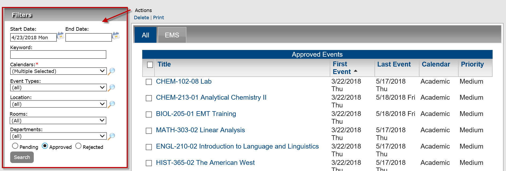

Master Calendar Filters Panel
Field Name | Description |
|---|---|
Start Date/End Date | Search for events that occur on or after the indicated start date, on or before the indicated end date, or within the specified date range. Leave these fields blank to search for all pending event requests in Master Calendar, regardless of the date. |
Keyword | The keyword can appear in any information that is associated with the event (e.g., the keyword can appear in the event name, the event description, etc.). |
Calendars | A list of all active calendars to which you have access as Calendar Manager. By default, all calendars to which you have access are selected as the search criteria. |
Event Types | A list of all currently active event types in Master Calendar. Click the Lookup icon to open the Event Types dialog box and select the event types. |
Location | A list of all currently active event locations in Master Calendar. Click the Lookup icon to open the Locations dialog box and select the locations. |
Rooms | A list of all currently active sub-locations in Master Calendar. Click the Lookup icon to open the Rooms dialog box and select the room. “Rooms” is the default label for a sub-location. Depending on how your Master Calendar site administrator has configured Master Calendar, you might see this labeled as something else (e.g., “Fields,” “Offices,” etc.). No options are available on the Rooms list and the Lookup icon is not available unless you have selected a location for which active rooms have been configured. |
Departments | A list of all currently active departments in Master Calendar. “Department” is a default label. Depending on how your Master Calendar site administrator has configured Master Calendar, you might see this labeled as something else, (e.g., “Business Units”). |
Pending/Approved/Rejected | The status of the events for which to search. You can select only one value. |
A single line runs through any event for which all the event dates have been canceled.